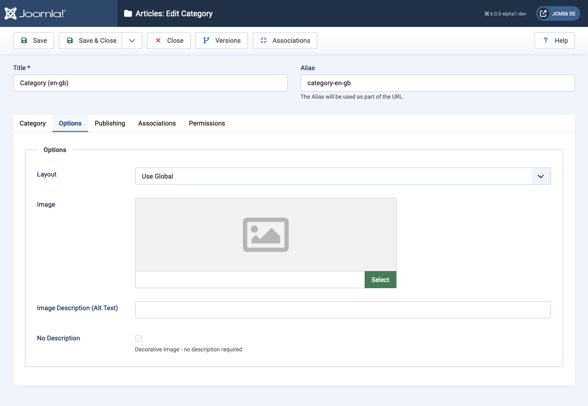

Components that use categories have an Options tab that allows customisation of the Category appearance. The following example shows the Options tab for the Content component, which is used for Articles.
Different components offer different layout options from the dropdown list. For example, the Articles: Category Options layout offers:
---From Global Options---
Use Global
---From Component---
Blog
List
[ToDo] Examples to show change in appearance with different options.
